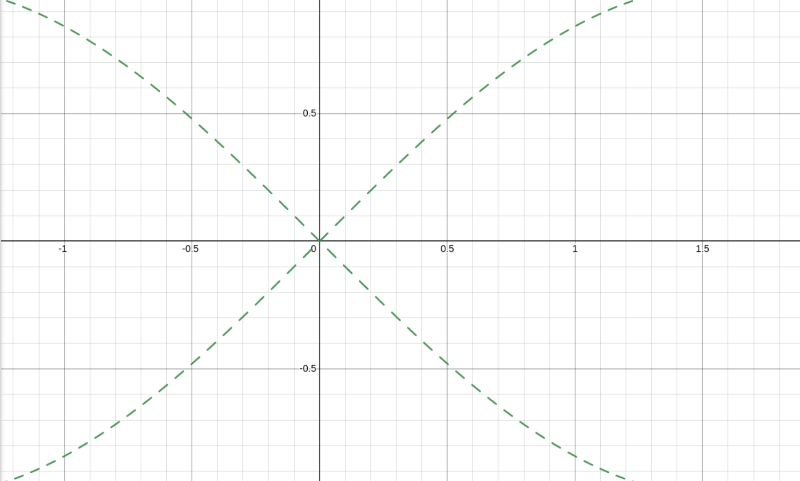

Functions have a really important thing: They cannot have multiple outputs for the same input. For any vertical line on a graph of a function, it cannot go through the line twice. This is called the vertical line test. Below is a real function.
I was working on a project involving making sound waves and was graphing them on desmos a while back. One of the waves I was making was a square wave, which is always either 1 or -1. It jumps between them without transition. I was also both adding and multiplying different base functions together when I tried multiplying a square wave and sine wave together, and when the frequency was high enough it appeared as if there were 2 graphs mirroring eachother, when in reality it was only one flickering back and forth between posotive and negative.
The equation:abs(2(round(.5+sin(100x))-.5)+sin(x))
revealed
